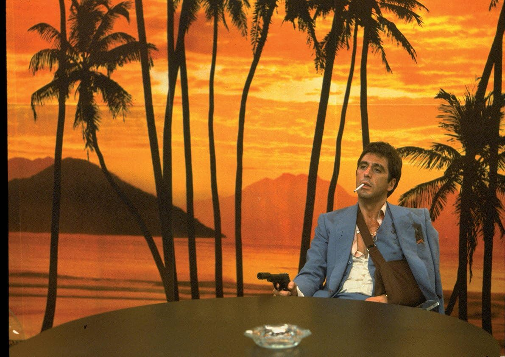

Mert Yerük
Hakkımda
Merhaba ben Mert. Patika kampı ile frontend bilgimi tazeliyorum.
İlgi Alanlarım
Dizi
Breaking Bad
Friends
Sherlock
Film
Scarface
Fight Clup
Pulp Fiction
Kitap
George Orwell - 1984
John Steinbeck - Fareler ve İnsanlar
José Mauro de Vasconcelos - Şeker Portakalı
Sevdiğim Filmler
Scarface

Yaralı Yüz; Brian DePalma'nın yönettiği,
Al Pacino
'nun başrol oynadığı 1983 yapımı suç ve drama filmidir. Aynı isimli 1932 yapımı Yaralı Yüz'ün serbest uyarlamasıdır.